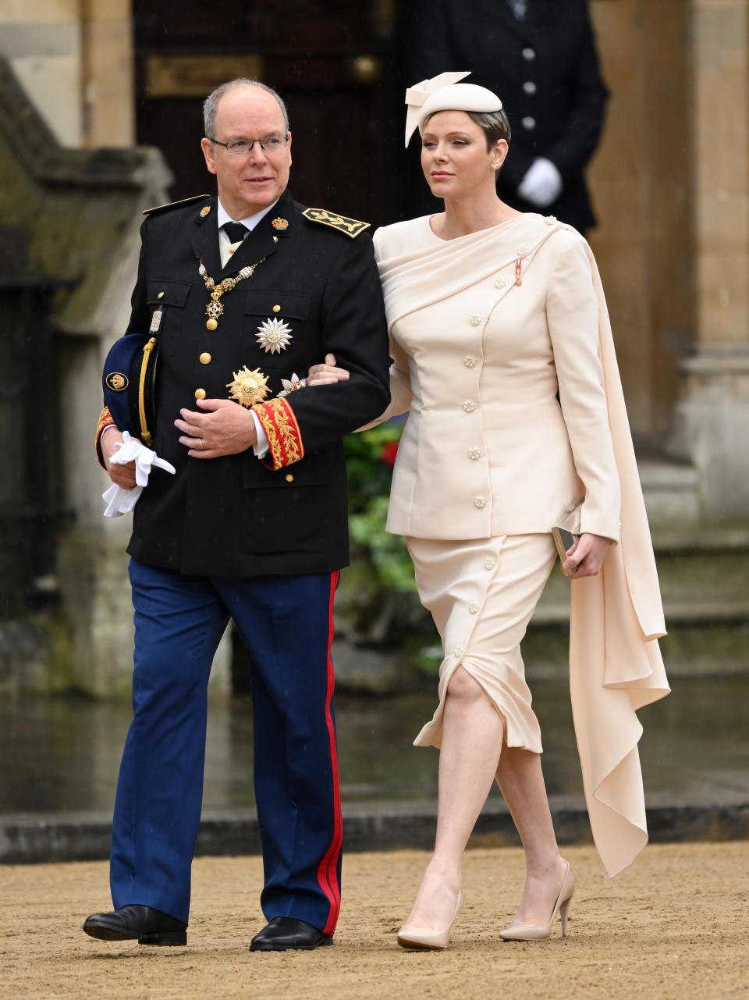

You will see who am I, and more about myself. For example, I am a former flute player. I have done primary musical school.
I decided to show you one part of my bucket list. I like travelling, so that's why it's there. I decided, on that page pictures to speak about themselves. So, this is the best way to experience by yourself the bountifulness of each of my chose places.
The place that is on my bucket-list is Bitola. To be exact, Pelister. I want to see the natural lakes.

All is ok, but Royals in Personal Blog?! You are probably asking yourself why. Because, since May 2018 (Prince Harry and the then-Meghan Markle wedding)
I am a keen follower of them. Over the years, I learned a lot including that there are more Royal houses.
After time, I started following others and even following them on social media platforms.
Did you know that Monaco's prince is 20 years older than his wife? Also, this prince is full of drama.
